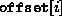

Data Structures and Algorithms
with Object-Oriented Design Patterns in Java
Data Structures and Algorithms
with Object-Oriented Design Patterns in JavaThis section presents a sorting algorithm known as least-significant-digit-first radix sorting . Radix sorting is based on the bucket sorting algorithm discussed in the preceding section. However, radix sorting is practical for much larger universal sets than it is practical to handle with a bucket sort.
Radix sorting can be used when each element of the universal set can be viewed as a sequences of digits (or letters or any other symbols). For example, we can represent each integer between 0 and 99 as a sequence of two, decimal digits. (For example, the number five is represented as ``05'').
To sort an array of two-digit numbers, the algorithm makes two sorting passes through the array. In the first pass, the elements of the array are sorted by the least significant decimal digit. In the second pass, the elements of the array are sorted by the most significant decimal digit. The key characteristic of the radix sort is that the second pass is done in such a way that it does not destroy the effect of the first pass. Consequently, after two passes through the array, the data is contained therein is sorted.
Each pass of the radix sort is implemented as a bucket sort. In the example we base the sort on decimal digits. Therefore, this is called a radix-10 sort and ten buckets are required to do each sorting pass.
Figure  illustrates the operation of the radix-10 sort.
The first radix sorting pass considers the least significant digits.
As in the bucket sort, a single pass is made through the unsorted data,
counting the number of times each decimal digit appears
as the least-significant digit.
For example, there are no elements that have a 0 as the least-significant digit;
there are two elements that have a 1 as the least-significant digit; and so on.
illustrates the operation of the radix-10 sort.
The first radix sorting pass considers the least significant digits.
As in the bucket sort, a single pass is made through the unsorted data,
counting the number of times each decimal digit appears
as the least-significant digit.
For example, there are no elements that have a 0 as the least-significant digit;
there are two elements that have a 1 as the least-significant digit; and so on.
After the counts have been determined, it is necessary to permute the input sequence so that it is sorted by the least-significant digits. To do this permutation efficiently, we compute the sequence of offsets given by
where R is the sorting radix. Note that  is the position in the permuted sequence of the first occurrence of an element whose least significant digit is i. By making use of the offsets, it is possible to permute the input sequence by making a single pass through the sequence.
The second radix sorting pass considers the most significant digits. As above a single pass is made through the permuted data sequence counting the number of times each decimal digit appears as the most-significant digit. Then the sequence of offsets is computed as above. The sequence is permuted again using the offsets producing the final, sorted sequence.
In general, radix sorting can be used when the elements of the universe can be viewed as p-digit numbers with respect to some radix, R. That is, each element of the universe has the form
where for . In this case, the radix sort algorithm must make p sorting passes from the least significant digit, , to the most significant digit, , and each sorting pass uses exactly R counters.
Radix sorting can also be used when the universe can be viewed as the cross-product of a finite number of finite sets. That is, when the universe has the form
where p>0 is a fixed integer constant
and  is a finite set for .
For example, each card in a 52-card deck of playing cards
can be represented as an element of , where
and .
is a finite set for .
For example, each card in a 52-card deck of playing cards
can be represented as an element of , where
and .
Before we can sort over the universe U, we need to define what it means for one element to precede another in U. The usual way to do this is called lexicographic ordering . For example in the case of the playing cards we may say that one card precedes another if its suit precedes the other suit or if the suits are equal but the face value precedes that of the other.
In general, given the universe
,
and two elements of U, say x and y,
represented by the p-tuples
and , respectively,
we say that x lexicographically precedes y
if there exists such that and
for all  .
.
With this definition of precedence,
we can radix sort a sequence of elements drawn from U
by sorting with respect to the components of the p-tuples.
Specifically, we sort first with respect to , then ,
and so on down to .
Notice that the algorithm does p sorting passes
and in the  pass it requires counters.
For example to sort a deck of cards,
two passes are required.
In first pass the cards are sorted into 13 piles
according to their face values.
In the second pass the cards are sorted into four piles
according to their suits.
pass it requires counters.
For example to sort a deck of cards,
two passes are required.
In first pass the cards are sorted into 13 piles
according to their face values.
In the second pass the cards are sorted into four piles
according to their suits.
 Copyright © 1998 by Bruno R. Preiss, P.Eng. All rights reserved.
Copyright © 1998 by Bruno R. Preiss, P.Eng. All rights reserved.